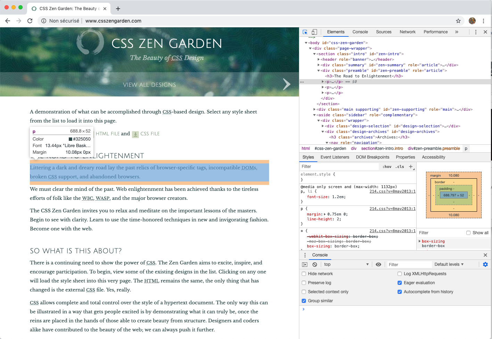
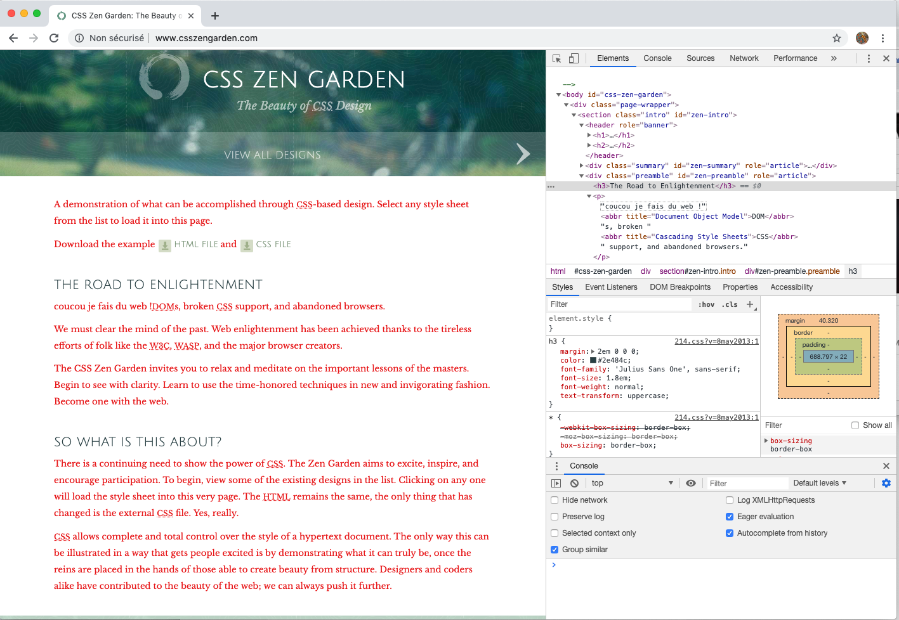

Outils de développement
- François Brucker
Introduction au web (en particulier html et css) via l'utilisation des outils de développements de chrome.
On se promet qu'on va l'utiliser pour tous nos développement de pages web.
Installation
On utilisera chrome pour ce tuto. Ils existent cependant pour quasi tous les navigateurs web.
Chrome
On trouve les Outils de développement dans :
- "menu afficher > Option pour les développeurs > OUtils de développement"
- "les trois points à droite de la barre de navigation" > "plus d'outils" > "outils de développement"
Autres navigateurs
Safari
Firefox
Utilisation
On va regarder et utiliser les différents onglets des outils de développements.
Pour accéder aux outils de développement, suivez la doc : https://developer.chrome.com/docs/devtools/open/.
Le menu Elements
Le rendu d'une page web est faite en combinant trois parties :
- le fond, la structure : elle est décrite en utilisant le langage html
- la forme, la position : elle est décrite en utilisant le langage css
- les interactions qui sont décrites avec le langage javascript
Pour un même fond, la forme peut changer radicalement. Le site http://www.csszengarden.com/ en montre un effet extrême. Tout en bas de la page, vous pouvez changer le css pour changer la présentation.
Testez vous-même les différences.en changeant de design (l'emplacement des liens va changer selon le design bien sur...)
Description
On va utiliser l'onglet éléments des outils de développement.
- aller sur le site : http://www.csszengarden.com/
- ouvrez les outils de Développement
Vous devriez avoir quelque chose de ce type :

Placez vous dans le menu Elements des outils de développement en cliquant dessus. Il doit être maintenant souligné en bleu. Il doit y avoir 3 parties, les unes en dessous des autres :
- le menu des outils de développement : "une flèche", une "image de mobile" et un menu commençant par "Elements", puis "Console", ... et tout à droite "3 points verticaux".
- une partie avec un menu commençant par "Styles", puis "Computed", "Layout", "Event Listeneners", ...
- une console (si elle n’apparaît pas : " 3 points verticaux à droite du menu des outils de développement" > "Show console drawer")
On verra plus tard la signification précise de tout cela, mais pour l'instant on retiendra que :
- la première partie correspond au html (le fond). Y sont décrit les différentes parties de la page
- la seconde partie correspond au css (la forme). Y sont décrit les apparences des différentes parties de la page
- la troisième partie correspond au code javascript. Y sont exécutées les commandes javascript qui gèrent les interactions de la page avec l'utilisateur
Expérimentation
Documentation :
Lorsque l'on crée des pages, il faut toujours voir le rendu le plus souvent possible. En effet, il n'y a pas de compilation du html/css donc les erreurs sont nombreuses. Avoir un moyen de voir rapidement où se situent les soucis et quelles sont les propriétés utilisées est cruciale.
En cliquant sur la flèche du menu (à gauche de Elements) : elle doit devenir bleue. On peut ensuite voir les différentes parties de la page en glissant sur la partie gauche du navigateur où est rendue la page ou sur la partie html.

Dans l'image ci-dessus :
- dans la partie de rendu on voit le bloc html surligné
- dans la première partie des Elements on voit la structure html associée (un bloc de type paragraphe :
<p> ... </p>) - dans la seconde partie des Elements on voit les propriétés css associés, et en particulier sa taille (la fenêtre à droite : un bloc de 688x52 pixels)
Modifions tout ça :
-
le html :
- dans la partie html ouvrez le bloc paragraphe en cliquant sur le triangle à gauche du bloc :

- On peut changer le texte en cliquant sur le texte dans la partie html et en le modifiant. J'ai remplacé le texte
"Littering a dark and dreary road lay the past relics of browser-specific tags, incompatible"parcoucou je fais du web !

- dans la partie html ouvrez le bloc paragraphe en cliquant sur le triangle à gauche du bloc :
-
le css :
- il est chargé au début du html, dans la balise
<head></head>, à la ligne commençant par<link .... Changez le nom du fichier (pour que chrome ne le trouve plus), et voir ce que donne le html sans css.ctrl-zpour le remettre. - http://www.csszengarden.com/ est le site fait pour montrer l'importance du css. En bas de page vous pouvez changer de css pour changer dramatiquement de présentation.
- re-sélectionnez le paragraphe que l'on a modifié et scrollez dans la partie css jusqu'à voir une propriété
color(elle devrait être tout en bas de la partie css)

- en cliquant sur la couleur, vous pouvez la modifier. Le nombre est le code RGB associé à la couleur.

- il est chargé au début du html, dans la balise
Changer la couleur change la couleur de tout le texte ! C'est normal, la couleur (l'attribut color) est associé non pas à notre paragraphe, mais au bloc body qui est le bloc contenant toute la structure à afficher (cherchez le dans le html) :
body {
color: #ea1a1a;
background: #fff;
font-family: 'Libre Baskerville', sans-serif;
font-size: 70%;
}
Cela n'a en revanche pas affecté les titres. En cliquant sur un titre on voit que la couleur issue de body est barrée.

Elle est surchargée par la propriété color associé à h3, plus précise car le bloc h3 est à l'intérieur du bloc body (correspond à un titre de moyenne importance). S'il n'y avait pas eu de propriété css associé à h3, la couleur du titre aurait également été rouge :
h3 {
margin: 2em 0 0 0;
color: #2e484c;
font-family: 'Julius Sans One', sans-serif;
font-size: 1.8em;
font-weight: normal;
text-transform: uppercase;
}

Allez sur le site du monde :
- Changez la couleur des titres En mettant un vert qui pète ! Si vous voulez facilement voir les couleurs et leurs nombres associé, allez faire un tour du côté de https://color.adobe.com.
- Changez les titres du https://www.lemonde.fr/ en quelque chose de plus joyeux. Et changez la couleur.

Le menu sources
tout les fichiers utilisés pour créer la page, réparties par urls.
- depuis le site http://www.csszengarden.com/ :
index: qui est le départ de tout site. Ce fichier (html) charge le reste des données. En particulier le fichier css (ligne 7)- le fichier css, qui est situé sur le site http://www.csszengarden.com/ et dans un répertoire 214. Il est nommé
214.css?v=8may2013 - des images (elles ne sont pas vides. Il y a des lignes dans une image transparente. Ouvrez par exemple
contour-opaque.pngdans une nouvelle fenêtre en cliquant droit dessus, vous verrez sur fond noir des formes)
- depuis un autre site (ici google) : une fonte google est chargée (en ligne 66 du css principal) : son css (
fonts.googleapi.com) et les images associées (depuisfonts.gstatic.com))
Que charge le site du https://www.lemonde.fr/ ?
le menu network
Documentation :
Montre tous les appels réseaux de la page web (ce qui correspond peu ou prou aux fichiers chargés) et le temps. C'est très utile pour déterminer la charge réseau de son site, en particulier lorsque l'on crée son propre site avec de grosses images, de la vidéo, etc* et que tout devient lent une fois mis sur un site distant.
Il ne faut jamais oublier que le réseau, même avec la fibre, ça ralenti le chargement.
Pour le site http://www.csszengarden.com/, voilà ce que donne l'onglet network :

- l'appel à http://www.csszengarden.com a rendu un status de 200, c'était un document de 5kb et la durée entre l'appel et la réception du document a duré 235ms.
- la feuille de style
214.css?v=8may2013a également rendu un status de 200 et c'était une feuille de style css (stylesheet)
statut d'une requête
Le status est le résultat de l'appel en utilisant le protocole http : https://fr.wikipedia.org/wiki/Liste_des_codes_HTTP. 200 correspond à un succès de la requête :
- le navigateur a fait une requête au serveur web situé à l'adresse http://www.csszengarden.com/
- le serveur lui a répondu en lui envoyant des données (le fichier index) et un status de 200.
Si on demande à chrome de chercher un site qui n'existe pas sur http://www.csszengarden.com/, comme http://www.csszengarden.com/mon_truc_en_plume/ : on rendra un statut de 404 : le serveur situé à http://www.csszengarden.com/ ne sait pas quoi faire avec la demande.
- si on cherche un site qui n'existe pas (ce qui est assez dur...) comme https://www.zglup.com/ le status est curieusement de
200. C'est du au fait que comme le serveur n'existe pas c'est chrome lui-même qui affiche une page. Le résultat est donc non pas la réponse du serveur (il ne peut pas répondre, il n'existe pas) mais celle de chrome. Dans le cas de http://www.csszengarden.com/mon_truc_en_plume/, c'est le serveur de http://www.csszengarden.com qui répondait. - En cliquant sur une requête serveur, on voit les entêtes d'appels et de réponses (voir https://fr.wikipedia.org/wiki/Hypertext_Transfer_Protocol pour une réponse détaillée).
Pour apprendre facilement les statuts http, rien de tel que : https://http.cat/
Essayez sur le site du https://www.lemonde.fr/.
Le menu Application
Montre toutes les choses stockées sur votre ordinateur par le site, comme les cookies par exemple.
Les cookies ne sont pas tous mauvais. Ils sont la seule façon pour un site de se rappeler de vous.
Exemple d'utilisation d'un cookie :
- vous vous connectez à un site. Il vous envoie un cookie.
- à chaque fois que vous vous reconnectez à ce site, le navigateur cherche s'il n'existe pas un cookie avec le même nom que le site. Si oui, il l'envoie en même temps que la requête.
Si les cookies n'existaient pas, il serait impossible au serveur de se rappeler de vous. En particulier, pas de connexion possible (il faudrait envoyer son mot de passe à chaque appel de page par exemple).
Maintenant, c'est sur que c'est aussi pour vous surveiller. Encore une fois allez sur le site du monde et regardez les domaines associées au cookie du monde. Les domaines www.facebook.com, .doubleclick.net et autres .weborama.fr c'est pas pour faire joli...
Supprimer le cookie de libération sur son site https://www.liberation.fr/ ré-initialise le nombre de visite possible.